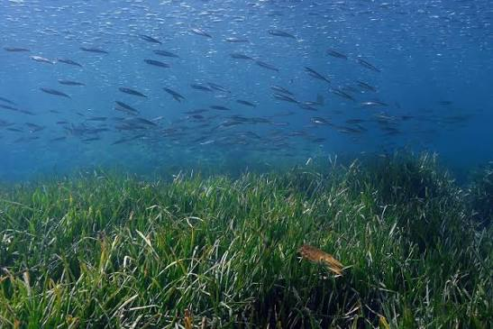

Herbiers
de posidonies
Banyuls


⟹ Patrimoine Naturel Sous-Marin ⟸
Le long de la côte rocheuse de Banyuls-sur-Mer et de Cerbère, de vastes prairies sous-marines de posidonie (Posidonia oceanica) tapissent les fonds depuis des millénaires. Cette plante à fleurs, et non une algue, forme l'un des écosystèmes les plus riches et les plus anciens de Méditerranée.

Conscients de la fragilité de ce milieu, les pêcheurs et scientifiques locaux obtiennent en 1974 la création de la réserve naturelle marine de Cerbère-Banyuls, la première réserve marine de France métropolitaine, précisément pour protéger ces herbiers et la faune qui leur est associée.
Certaines de ces formations, appelées « mattes », résultent d'une croissance extrêmement lente — quelques centimètres par siècle — et peuvent atteindre plusieurs milliers d'années d'âge, faisant des posidonies parmi les organismes vivants les plus vieux de la planète.
Depuis, la réserve de Banyuls sert de référence scientifique pour l'étude et la surveillance à long terme de ces herbiers, aujourd'hui reconnus comme un habitat prioritaire à l'échelle européenne.
Par la photosynthèse, les herbiers de posidonie produisent une part considérable de l'oxygène dissous dans les eaux côtières méditerranéennes, tout en absorbant et stockant durablement du carbone dans leurs mattes.
Leur réseau dense de feuilles et de rhizomes stabilise les fonds sableux, freine la houle et protège ainsi les plages voisines contre l'érosion, un service rendu gratuitement par cet écosystème discret.
Véritable nurserie sous-marine, l'herbier abrite juvéniles de poissons, mollusques et crustacés qui y trouvent nourriture et abri avant de rejoindre le large, ce qui en fait un pilier de la biodiversité et de la pêche côtière catalane.
Mouillage des ancres : le jet d'ancre des bateaux de plaisance arrache les rhizomes et peut détruire en quelques minutes des mattes vieilles de plusieurs siècles.
Réchauffement de l'eau : la hausse des températures méditerranéennes fragilise la posidonie, plante sensible aux vagues de chaleur marines répétées.
Espèces invasives : certaines algues exotiques comme le Caulerpa peuvent coloniser les zones dégradées et concurrencer la posidonie.
Pollution côtière : le ruissellement urbain et agricole altère la clarté de l'eau, indispensable à la photosynthèse de la plante en profondeur.
La réserve naturelle marine de Cerbère-Banyuls, seule réserve marine intégrale de la côte catalane, offre un accès encadré et pédagogique à ces prairies sous-marines exceptionnelles.
Le sentier sous-marin de Peyrefite à Cerbère, balisé et accessible en palmes-masque-tuba pour tous niveaux, longe directement un herbier bien conservé.
La zone de non-mouillage de Banyuls-sur-Mer où des bouées d'amarrage ont été installées pour préserver les herbiers des ancrages sauvages.
Le laboratoire arago et l'observatoire océanologique proposent régulièrement des sorties de sensibilisation autour des posidonies.
Toute plongée ou baignade dans la réserve doit respecter les zones réglementées, affichées aux principaux points d'accès du littoral.